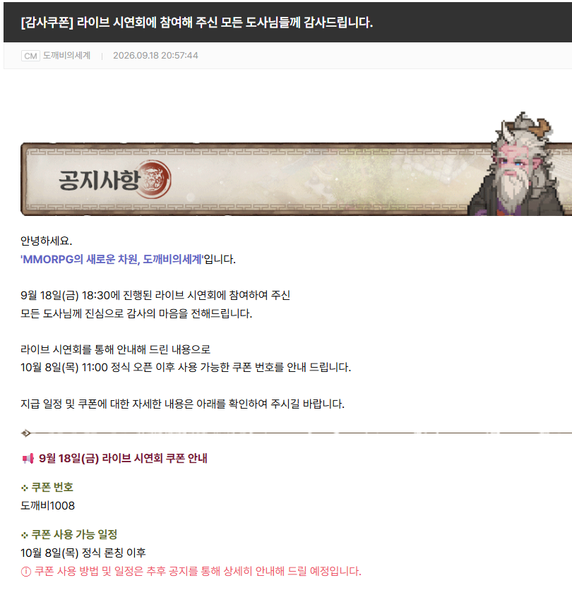
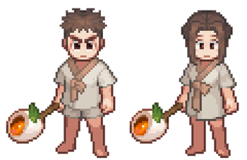

도깨비의세계 시연회 감사 쿠폰 도깨비1008, 꿀떡 무기 외형은 10월 8일 정식 오픈 이후 사용
도깨비의세계 시연회 감사 쿠폰 번호는 도깨비1008이고, 10월 8일(목) 11:00 정식 오픈 이후에 쓸 수 있어요. 보상은 꿀떡 무기(외형)인데요, 어디에 어떻게 넣는지는 사용 방법 공지를 기다려야 하더라고요.
정식 오픈이 이틀 앞이라(D-2) 오픈하자마자 헤매지 않으시도록 이 쿠폰부터 따로 정리해 봤어요. 2026-10-06 기준이라 오픈 이후 새 공지가 올라오면 달라질 수 있습니다.
1. 도깨비1008 한눈에 보기, 번호ㆍ대상ㆍ보상
도깨비1008은 9월 18일 라이브 시연회에 참여한 분들께 드리는 감사 쿠폰이고, 보상은 꿀떡 무기 외형이에요.
| 항목 | 내용 |
|---|---|
| 쿠폰 번호 | 도깨비1008 |
| 대상 | 9월 18일(금) 18:30 라이브 시연회 참여자 |
| 사용 가능 시점 | 10월 8일(목) 11:00 정식 오픈 이후 |
| 보상 | 꿀떡 무기(외형) |
| 사용 방법ㆍ일정 | 추후 공지 예정 |
번호 끝의 1008이 정식 오픈일인 10월 8일과 똑같아서 한 번 보면 잊어버리기 어려워요. 공지 서두에는 '11:00 정식 오픈 이후', 쿠폰 안내 칸에는 '정식 론칭 이후'라고 적혀 있는데, 둘 다 오픈 이후라는 뜻이에요.
2. 공지 화면, 번호와 일정
공지에는 쿠폰 번호와 사용 가능 일정이 있고, 사용 방법과 일정은 추후 공지로 넘겨 두었어요.
시연회가 열린 9월 18일 저녁에 올라온 공지예요. 본문은 '라이브 시연회에 참여하여 주신 모든 도사님'께 감사 인사를 전한 뒤, 시연회에서 안내한 쿠폰을 정식 오픈 이후 쓸 수 있게 번호로 다시 알리는 순서로 흘러가요.

지금 보시는 화면처럼 쿠폰 번호 → 사용 가능 일정 순이고, 일정 바로 아래에 붉은 글씨로 추후 공지 한 줄이 붙어 있어요
이미지 출처: 도깨비의세계 공식 포럼 공지(2026.09.18) 화면 캡처
그 붉은 글씨가 '쿠폰 사용 방법 및 일정은 추후 공지를 통해 상세히 안내해 드릴 예정입니다.'예요. 그래서 이 글도 사용 방법은 비워 뒀습니다. 후속 공지가 올라오면 이 부분부터 채워 넣을게요. 아, 공지 화면의 번호는 '도깨비' 뒤에 숫자 1008이 붙은 형태 그대로예요.
3. 꿀떡 무기(외형), 보상 정리
이 쿠폰의 보상은 꿀떡 무기이고, 공지에는 '(외형)'이라고 적혀 있어요.
보상 칸에는 남ㆍ여 기본 의복 도트 캐릭터가 꿀떡이 꽂힌 국자 모양 무기를 들고 서 있는 이미지가 붙어 있어요. 보시면 짧은 머리 남자 캐릭터와 긴 머리 여자 캐릭터 둘 다 국자 끝에 꿀떡이 꽂힌 같은 무기를 들고 있고요. 국자가 무기(?)라니, 주인장은 이 발상이 제일 도깨비의세계답다 싶어서 웃음이 먼저 나더라고요 ㅋㅋ

꿀떡 무기(외형), 남ㆍ여 기본 의복 캐릭터가 같은 무기를 들고 있어요
이미지 출처: 도깨비의세계 공식 포럼 공지 1019 첨부 이미지
공지에 적힌 건 '외형'까지라서 이 글도 겉모습 이야기까지만 해요. 이 무기가 게임 안에서 어떻게 쓰이는지는 지금 말씀드릴 수 있는 게 없습니다. 저는 외형 보상이라 오히려 반갑더라고요. 도트 캐릭터가 국자를 든 모습이 눈에 밟혀서요.
4. 아직 공개되지 않은 것
2026-10-06 기준으로 쿠폰 등록(입력) 경로, 사용 종료일, 중복 사용 여부는 아직 공개되지 않았어요.
- 쿠폰 등록 경로 : 게임 안 어디에서 번호를 넣는지
- 사용 종료일 : 언제까지 쓸 수 있는지
- 중복 사용 여부 : 계정당 몇 번 쓸 수 있는지
- 꿀떡 무기 장착 방식 : 외형을 어떻게 적용하는지
확인 위치: 공식 포럼 공지 목록의 쿠폰 사용 방법 후속 공지 · 확인되면 위 목록을 실제 내용으로 교체해 주세요.
같은 날 공지 목록 첫 페이지에는 PC 설치, 결제 할인, 정식 오픈 일정 안내만 있고 쿠폰 사용 방법 공지는 없었어요. 10월 8일 이후 올라오는 공지로 바뀔 수 있고요. 개인적으로는 사용 종료일이 제일 신경 쓰이는데, 기한이 안 적혀 있으니 오픈 초반에 넣어 두는 쪽이 마음 편할 것 같네요. 위 목록은 후속 공지가 나오는 대로 하나씩 채워서 다시 정리해 드릴게요.
5. 헷갈리는 다른 쿠폰 구분
도깨비1008은 시연회 참여자용 쿠폰이에요. 같은 시기에 받을 수 있는 쿠폰이 몇 가지 더 있는데, 룰렛 당첨 '탈것 선택 상자'와 SNS 구독 '채널 구독 보상 상자'는 따로 지급되는 별개 쿠폰이에요.
| 쿠폰 | 대상 | 코드 받는 곳 | 보상 |
|---|---|---|---|
| 도깨비1008 | 9월 18일 라이브 시연회 참여자 | 공지에 번호가 적혀 있음 | 꿀떡 무기(외형) |
| 탈것 선택 상자 | 룰렛 이벤트 당첨자 | 정식 오픈 후 카카오톡 채널 메시지로 쿠폰 코드 발송 | 쿠폰 사용 → 우편함에 상자 지급 → 탈것 6종 중 택1 |
| 채널 구독 보상 상자 | 카카오톡 채널ㆍ유튜브 구독자 | 정식 오픈 후 카카오톡 채널 메시지로 쿠폰 코드 발송 | 채널 구독 보상 상자 |
받는 조건부터 달라요. 탈것 선택 상자는 룰렛에 당첨된 분만, 채널 구독 보상 상자는 카카오톡 채널과 유튜브 구독자에게 나가고, 도깨비1008은 시연회에 참여한 모든 도사님이 대상이에요. 숫자 6이 두 번 나와서 헷갈리실 수 있는데, 탈것 선택 상자 쿠폰은 계정당 6회 쓸 수 있고 상자를 열면 탈것 6종 중 하나를 고르는 구조예요. 6회는 그 쿠폰의 사용 횟수라서 도깨비1008과는 상관이 없습니다. 이 쿠폰들 말고 사전예약 보상 쿠폰도 따로 있으니, 받은 코드가 어느 쿠폰 건지는 먼저 확인해 보세요.
6. 오픈 당일 체크 순서
오픈하면 공식 포럼 공지부터 확인하고, 안내된 경로에서 도깨비1008을 입력하면 돼요.
- 공식 포럼 공지 목록을 열어 쿠폰 사용 방법ㆍ일정 후속 공지가 올라왔는지 확인하세요.
- 공지에 등록 경로가 적혀 있으면 그 위치에서 도깨비1008을 입력하세요. 한글 '도깨비' 뒤에 숫자 1008이에요. 입력창에 한 글자씩 치다 오타가 나기 쉬우니 번호는 복사해서 붙여 넣는 쪽이 편해요.
- 사용 종료일이 적혀 있다면 바로 메모해 두세요. 기한을 모른 채 두면 쓰기 전에 지나가 버릴 수 있어요.
- 카카오톡 채널 메시지함도 열어 보세요. 룰렛 당첨ㆍ구독 쿠폰 코드는 그쪽으로 옵니다.
PC로 받으시는 분은 오픈 전에 사양부터 확인해 두면 당일이 한결 편해요. 사양은 따로 정리해 둔 글을 맨 아래 링크에 걸어 뒀어요.
자주 묻는 질문
Q. 시연회에 참여하지 않았는데 도깨비1008을 쓸 수 있나요?
공지는 '라이브 시연회에 참여하여 주신 모든 도사님'께 드리는 쿠폰이라고 적었어요. 참여하지 않은 계정도 입력되는지는 안내가 없어서, 후속 공지에서 대상 조건이 다시 나오는지 봐야 해요.
Q. 10월 8일 11시 정각에 바로 쓸 수 있나요?
공지 문구가 '정식 오픈 이후 사용 가능'이라서, 정각부터 열리는지는 후속 공지로 사용 일정이 나와야 알 수 있어요. 오픈하자마자 입력이 안 되더라도 일정이 아직 안 열린 걸 수 있으니 공지부터 확인해 보세요.
참고한 곳 (2026-10-06 기준)
· 도깨비의세계 공식 포럼 공지 「[감사쿠폰] 라이브 시연회에 참여해 주신 모든 도사님들께 감사드립니다.」 (2026.09.18)
· 도깨비의세계 공식 포럼 이벤트 안내(룰렛 이벤트)
· 도깨비의세계 공식 포럼 공지 「사전예약 안내」 중 SNS 구독 이벤트
▶ 같이 보면 좋은 글
· 도깨비의세계 사전 다운로드 최소 권장 사양 정리
· 도깨비의세계 사전예약 프리뷰 장인 정신 돋보이는 동양풍 도깨비 MMORPG